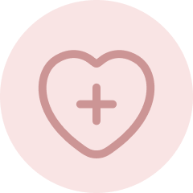
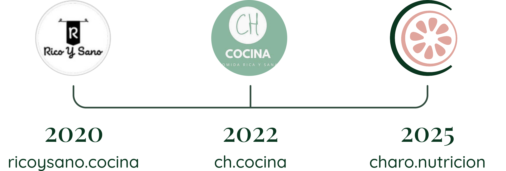
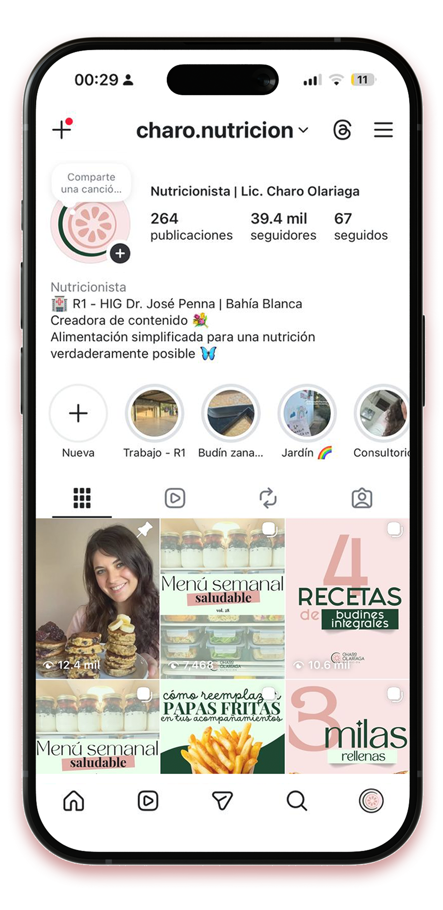

Mi Historia
Mi vínculo con la cocina empezó mucho antes de recibirme: siempre fue uno de mis hobbies favoritos. Cuando comencé la carrera, en 2020, abrí mi cuenta de Instagram para compartir recetas simples y un pedacito de ese camino que recién empezaba.
Con el tiempo, el espacio fue creciendo y transformándose. Cambiaron los nombres, los contenidos y también mi manera de comunicar, hasta encontrar una forma de hablar de nutrición que realmente me representara: cercana, simple y sin extremos. Este proyecto empezó desde cero. Hubo meses en los que éramos muy poquitos, pero cada mensaje, comentario y persona del otro lado siempre significó muchísimo para mí. Hoy somos muchos más, pero la esencia sigue siendo la misma: compartir herramientas reales para que mejorar la alimentación se sienta algo alcanzable. Gracias por acompañarme y ser parte de este camino 💛

